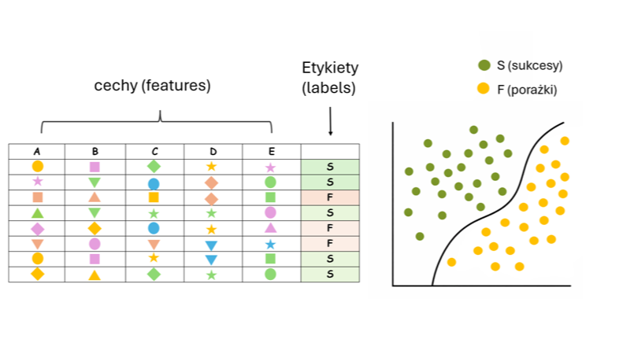
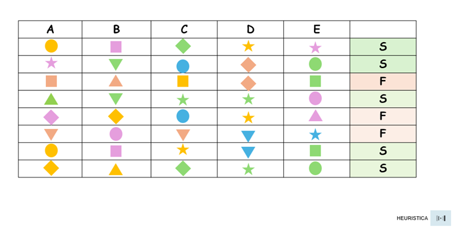
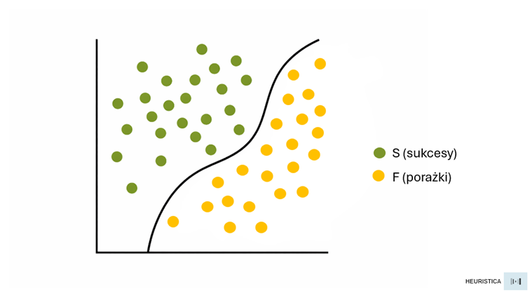
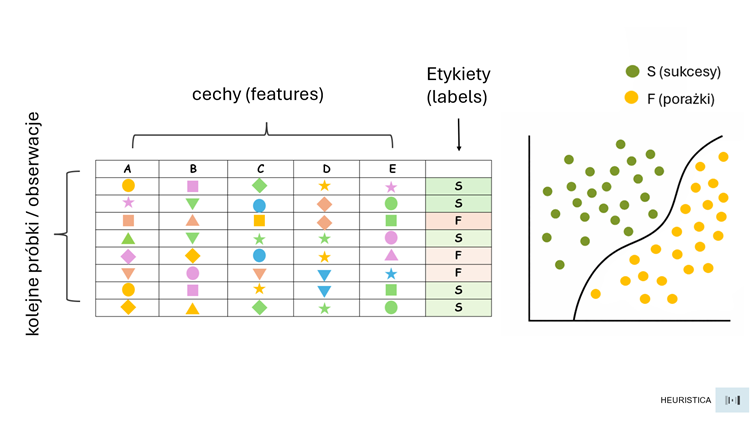
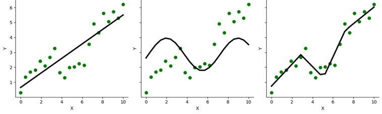
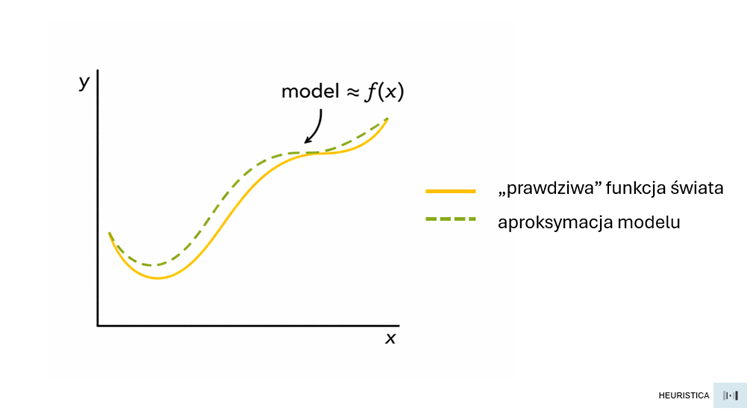

Czy strategię można zakodować? Czyli kilka luźnych uwag o strukturalizmie, machine learning, aproksymacji i ruchomych celach…

Moją pierwszą książką (a w zasadzie książeczką…) był wydany w roku 2009 „Atlas strategiczny...” (wyd. Hellion). Była to naiwna i nieudolna próba - tak to postrzegam z perspektywy czasu…- odpowiedzi na pytanie: czy w myśleniu strategicznym istnieją jakieś wyraziste wzorce. Wzorce, które można zidentyfikować i uchwycić opisem tak, by mogły służyć jako stałe elementy w planowaniu strategicznym (w tym przypadku w strategii komunikacji). I które gwarantowałyby sukces danego przedsięwzięcia – np. znacząco zwiększając skuteczność kampanii reklamowych.
Tym samym była to również próba odpowiedzi na pytanie: czy dla procesu strategicznego możliwe jest sformułowanie pewnego algorytmu - procedury, która pozwalałaby kształtować „strategie zwycięskie”.
To ambitne i buńczuczne przedsięwzięcie zakończyło się nader żałośnie - „Atlas strategiczny” jest notatką i zapisem tej porażki. Wnioski, które udało mi się wtedy wyciągnąć, są – delikatnie rzecz ujmując – banalne, nie wspominając o możliwości ich praktycznego wykorzystania.
Sam problem pozostał jednak w orbicie moich zainteresowań i powraca niczym bumerang przy różnych okazjach. I z tego, co widzę, powracać będzie jeszcze nie raz. Dlaczego warto kwestię tę wciąż drążyć – szczególnie dziś, w kontekście AI - spróbuję tu wyjaśnić.
Powracając do „Atlasu strategicznego”, to jak się okazało dokładnie w tym samym roku ukazała się praca pt. „Cracking the Ad Code” autorstwa zespołu J. Goldenberga, A. Levav, D. Mazursky oraz S. Solomon. Książka ta jest nieporównywalnie lepsza od nieszczęsnego „Atlasu…” pod każdym względem: metodologii, rzetelności badawczej oraz materiału analitycznego, nie mówiąc o jakości hipotez i sformułowanych w niej wniosków.
Dotarła ona do mnie z pewnym opóźnieniem (chyba ok. 1 rok po publikacji). Kiedy jednak zanurzyłem się w tę lekturę, stwierdziłem, że pewna część moich założeń nie była aż tak bzdurna i w jakiejś mierze pokrywała się z tym, czym zajęli się izraelscy badacze.
Zbieżności wynikać zaś mogły z tego, że kiedy uważnie wczytałem się w ich dzieło, zauważyłem, że jedną z inspiracji była dla nich praca G. Altszullera („Algorytm wynalazku”) oraz opracowana przez niego metoda TRIZ.
I dopiero czytając ich książkę uświadomiłem sobie, że to de facto Altszuller, o którym dowiedziałem się niegdyś w trakcie studiów od nieodżałowanego prof. Stefana Symotiuka, zainicjował moje swawolne rozważania zawarte w „Atlasie…”.
Z perspektywy czasu widzę, że „incepcja” ta nie była zupełnie przypadkowa, ponieważ dokładnie w tym samym czasie, gdy pisałem „Atlas…” zagłębiałem się w tajniki tzw. „storytellingu” i poza Campbellem wielokrotnie powracałem do lektury „Morfologii bajki” Władimira Proppa.
Dziś potrafię już chyba wyjaśnić sam sobie te fascynacje. Bo co właściwie łączy Altszullera i Proppa? – teoretyka wynalazczości i literaturoznawcę – formalistę? Odpowiedź jest prosta: wspólnym mianownikiem jest tu strukturalizm.
Obaj abstrahują od konkretów i liczy się dla nich głównie struktura, a nie temat (np. problem techniczny czy fabuła konkretnej baśni). Obaj też dążyli do próby wyznaczenia pewnego ograniczonego zbioru uniwersalnych elementów, które mogą tłumaczyć pewien wycinek rzeczywistości.
W TRIZ są to „sprzeczności” + „zasady wynalazcze”, z kolei u Proppa morfemy bajek i funkcje narracyjne. I okazuje się, że taki, ograniczony zbiór pewnych „cegiełek” czy też „klocków” daje w obu przypadkach w zasadzie nieskończoną liczbę możliwych wariantów, jeśli chodzi o ich kombinacje. Obaj też stosują coś, co można by nazwać „algorytmizacją kreatywności” pokazując, że kreatywność da się systematyzować i jednocześnie w pewnym sensie trenować.
Obecnie widzę więc to, czego zupełnie nie byłem przez lata świadomy — jak bardzo mój sposób myślenia „spaczony” został i przesiąknięty podejściem strukturalnym - do czego w dużej mierze przyczyniła się poznawana podczas studiowania na filozofii kultury antropologia kulturowa oraz np. pisma Claude’a Lévi-Straussa czy Ferdinanda de Saussure’a.
Główną wadą strukturalizmu jest tendencja do nadmiernej abstrakcji i pewien radykalny redukcjonizm. Próba sprowadzania najbardziej złożonych zjawisk do kilku prostych schematów czy binarnych opozycji pociąga za sobą ryzyko wielu błędów i nadmiernych uproszczeń. Tworzone w ten sposób modele mogą się również wydawać pozornie eleganckie i spójne, ale jak się okazuje mogą też być słabo falsyfikowalne empirycznie.
Inną wadą może być także pewna „ahistoryczność” – strukturalizm potrafi wypierać lub ignorować zmianę, proces i dynamikę danego zjawiska (np. kultury) w czasie. Sam więc strukturalizm okazuje się często zbyt słabym kluczem interpretacyjnym.
Tym jednak, co wydaje mi się jego ogromnym atutem i możliwością strukturalizmu, jest założenie, że sens nie wynika z pojedynczych elementów, ale przede wszystkim z relacji pomiędzy nimi - z ich ukrytej struktury, jakichś wzorców, które porządkują dane zjawisko.
W strukturalizmie liczy się również relacyjność – poszczególny, pojedynczy element ma znaczenie tylko w danym systemie (tak jak np. słowo w danym języku), ważna jest też powtarzalność i opozycje – pary wyraźnych przeciwieństw. Jednym słowem strukturalizm zachęca: „Nie pytaj o to, co to jest? Spróbuj zapytać: „jak to jest zorganizowane?”.
I właśnie takie podejście – strukturalne — próbowałem stosować, pisząc wspomniany „Atlas…” – w tym celu przeanalizowałem wówczas wiele przypadków – case studies różnych skutecznych kampanii reklamowych opublikowanych w katalogach Effie w latach 2002–2006.
Analizując każdą z tych kampanii próbowałem zaś zidentyfikować „morfemy” odpowiedzialne za sukces – elementy podstawowe w postaci np.:
- cel komunikacyjny,
- grupa docelowa,
- wielkość budżetu,
- forma reklamy,
- consumer insight,
- wartości marki itd. itp.
Łudziłem się przy tym, że istnieć musi jakiś wzór – ukryta, ale dająca się w końcu wydobyć magiczna kombinacja tych elementów, która zwiększa szansę sukcesu lub wręcz może być jego gwarancją. Warsztat, jakim się wtedy posługiwałem, był nader prymitywny i ubogi – arkusze Excela i proste tabelki, w których próbowałem zestawiać ze sobą identyfikowane mozolnie „cegiełki”, które stanowić miały budulec dla komunikacyjnej skuteczności. Była to więc praca dosyć naiwna i amatorska, jednak nie do końca pozbawiona sensu - co dociera do mnie coraz mocniej w miarę, jak próbuję zgłębiać i zrozumieć fundamenty AI – np. sposób funkcjonowania sieci neuronowych oraz podstawy uczenia maszynowego.
Bo co właściwie próbowałem wtedy zrobić? Z jakim problemem generalnie mierzymy się próbując uchwycić „algorytm strategii”? O co w tym problemie tak naprawdę chodzi?

Przyjmijmy, że każda nasza analizowana kampania – pojedyncza obserwacja poddana jest tu analizie, której wynikiem jest identyfikacja CECH (features) w rodzaju najprostszych kombinacji np.:
- niewielki budżet na media”
- insight: „nie lubię poczucia zależności”
- forma reklamy: tzw. „sceny z życia”
- wykorzystanie celebryty
Itd.
Każdy wiersz tabeli to zatem konkretna kombinacja cech (np. A–E) oraz przypisana do nich ETYKIETA (label) - wynik binarny w postaci sukces (S — success) lub porażka (F — failure). Cechy możemy to również potraktować jako zmienne niezależne, a etykietę jako zmienną zależną. Strategia będzie tu z kolei pewną hipotezą – w zasadzie będzie to funkcja / reguła, którą nasz model próbuje znaleźć.
Czyli dokładnie tak, jak w elementarnych zadaniach klasyfikacyjnych – np. próbie ustalenia, który e-mail w skrzynce pocztowej zaliczyć do spamu, a który jest neutralną, tudzież wartościową wiadomością.

Patrząc dziś na to, stwierdzić mogę jedynie, że intuicyjnie próbowałem wówczas zrobić kilka rzeczy jednocześnie.
Przede wszystkim należy tu zdefiniować przestrzeń cech – czyli ustalić, jakie zmienne w ogóle mają w tym przypadku znaczenie. I ta część procesu to jednocześnie pewien akt czysto „ontologiczny”: bo musimy tu zdecydować, co w ogóle uznawać będziemy za podstawowy budulec strategii – jej składowe „cegiełki”, a co możemy zignorować.
I już na tym etapie pojawiać się może mnóstwo wątpliwości w rodzaju: czy jako cechę przyjąć np. ogólnie obecność w mediach masowych, czy powinniśmy mieć odrębne cechy dla poszczególnych kanałów TV, radio, prasa, outdoor it.
Kiedy decyzja co do cech zostanie podjęta, to kolejną kwestią okazuje się odnalezienie funkcji decyzyjnej – czyli jakąś regułę, na przykład:
jeśli A + C + D → to sukcesNastępnie należałoby wzorzec taki uogólnić.
Jedną z największych barier może się okazać już sama liczba i rodzaj próbek. Do analizy wykorzystałem wówczas opisy 164 kampanii. W przeciwieństwie jednak do tego, jak wygląda załączona tu tabelka, moimi analizowanymi próbkami były wtedy wyłącznie kampanie, które znalazły się w katalogach Effie – a więc tylko kampanie z kategorii S (sic!)
Gdybym więc chciał cały ten eksperyment dziś powtórzyć należałoby zrobić to zupełnie inaczej. Po pierwsze – na pewno uzupełnić analizowany zbiór o porażki. Bo dużym błędem, jaki wtedy popełniłem była analiza wyłącznie kampanii nagrodzonych (jest to tzw. survivorship bias). Bez obserwacji typu F (porażka) nie uczymy modelu strategii, tylko racjonalizujemy sukces. Z punktu widzenia ML taki zbiór jest po prostu poznawczo jałowy i nie pozwala on informacyjnie odróżnić „sygnału” od „szumu”.

Chcąc więc przeprowadzić taki eksperyment ponownie należałoby się zastanowić jak w ogóle podejść do budowania takiego modelu? Jak zaprojektować tego rodzaju analizę i budowę modelu?
Być może punktem wyjścia powinno być radykalne przedefiniowanie celu całego przedsięwzięcia? Nie chodziłoby już zatem o próbę znalezienia „algorytmu sukcesu”, ale np. o próbę modelowanie rozkładu ryzyka – czyli np. próbę odpowiedzi na pytanie, jakie konfiguracje cech mogą zwiększać lub zmniejszać prawdopodobieństwo sukcesu, w jakich warunkach i przy jakich założeniach? Strategia nie byłaby tu wówczas regułą typu „jeśli–to”, lecz pewną hipotezą probabilistyczną, podatną również na korekty wraz z napływem nowych danych.
Jeszcze raz należałoby się również zastanowić i zdefiniować czym właściwie jest „sukces” (label)? Bo sama obecność kampanii w zbiorze nagrodzonych case’ów to zdecydowanie za mało. Być może powinny być to twarde KPI: (np. sprzedaż / zysk, Top of Mind, ROI, penetracja, itp.). Dodatkowo należałoby tu określić horyzont czasu i jakiś próg na zasadzie „sukces” = przekroczenie danego progu przy danych warunkach rynkowych.
Kolejna kwestia to rodzaj próbek – czyli np. pewne minimum S i F z tej samej populacji (czyli np. te same lata, kategorie albo rynki).
Następną rzeczą byłaby zaś precyzyjna ontologia cech (features), ale w kilku warstwach – np.:
Kontekst – np. kategoria/branża, sezonowość, konkurencja itp.
Strategia – np. cele, segmentacja, obietnica marki, typ insightu, RTB, pozycjonowanie itp.
Egzekucja – np. kanały, GRP/impressions, zasięg / częstotliwość, formaty, budżet, timing, kreatywne „tropy” (np. humor, celebryta, slice-of-life).
W tym też przypadku istotny będzie sam słownik i sposób kodowania. Słownikiem byłaby tu pewna jawna, zamknięta ontologia cech, czyli lista dozwolonych kategorii (np. typ insightu, format narracji, rola celebryty) oraz ich precyzyjne definicje.
Sposób kodowania to kolejne wyzwanie. Teoretycznie można by zastosować kodowanie binarne (0 albo 1), jeśli dana cecha występuje na zasadzie:
- celebrity = 1/0
- spot 30 sek = 1/0
- pozycjonowanie w oparciu o korzyść = 1/0
Innym podejściem byłoby kodowanie kategoryczne (cecha jedna z N) i tzw. one-hot encoding – np.:
- typ insightu: funkcjonalny / emocjonalny / tożsamościowy
Ponieważ w danych mamy wiele informacji wyrażanych liczbowo, możliwe jest również kodowanie ciągłe - GRP, reach, ToM – takie parametry wyrażane są przecież w skali ciągłej. To z kolei otwiera kolejną listę problemów związanych np. ze skalą i porównywalnością. GRP, reach czy ToM albo sprzedaż nie są przecież bezpośrednio porównywalne i w praktyce wymagałyby jakiejś normalizacji, przekształcania lub sprowadzania do klas porządkowych (np.: niskie / średnie / wysokie). Już zatem sama kwestia kodowania staje się tu poważnym wyzwaniem – i to nie tyle technicznym, co w zasadzie epistemologicznym. Akt kodowania to swoiste „zamrażanie interpretacji świata” w formie danych i decyzja o tym, co w ogóle może być przez model dostrzegane.
Powracają więc problemy strukturalizmu – ontologia zderza się tu z językiem, źle zdefiniowany słownik sprawia, że model uczy się zupełnie fałszywej struktury. Słownik i kodowanie to więc nie tylko „przygotowanie danych”, ale już na tym poziomie pojawia się pewna ukryta „teoria strategii”, którą model jedynie ujawni lub… skompromituje.
Tak opisywany problem pokazuje też jeszcze jedno założenie, które w praktyce niemal nigdy nie jest spełnione – jest to założenie tzw. stacjonarności.
I tak np. w klasycznym machine learning zakłada się czasem, że relacje pomiędzy cechami a etykietą są względnie stabilne w czasie. Tymczasem w strategii komunikacji nigdy nic nie jest stacjonarne. Wszystko wciąż się tu zmienia: media i kanały dotarcia, technologie, normy kulturowe, trendy konsumenckie, poziom szumu komunikacyjnego, kompetencje odbiorców itd. Ba, zmieniać się może nawet sama definicja „skuteczności”.
To, co więc było silnym predyktorem sukcesu np. w latach 2002–2006, dziś w strategii może się okazać obojętne albo wręcz toksyczne. Model zaś uczony na danych historycznych nie tyle „odkrywa prawidłowości”, co uczy się i zapamiętuje konkretny moment kulturowy. Oznacza to z kolei, że sama strategia (jako funkcja decyzyjna) – to nie jest po prostu jedna funkcja, lecz np. cała rodzina funkcji zależnych od czasu i kontekstu.
W najlepszym razie możemy więc modelować jedynie „lokalne” regularności, obowiązujące w określonych warunkach historycznych, rynkowych, medialnych czy kulturowych. W najgorszym zaś stworzymy elegancki model, który perfekcyjnie opisuje wyłącznie przeszłość, a spektakularnie zawodzić będzie w teraźniejszości.
Z tego punktu widzenia problem „algorytmu strategii” nie polega już na małej próbie, złej jakości danych czy złym kodowaniu. Jego rdzeniem staje się fakt, że sam obiekt, który próbujemy uchwycić w modelu, ciągle się porusza i zmienia. To zaś zasadniczo zmienić też powinno naturę całego przedsięwzięcia. Bo być może powinniśmy zrezygnować z poszukiwania trwałych wzorców i sprawdzonych „recept na sukces”. Być może jest to problem uchwycenia systemu, w którym kluczem są ciągłe uczenie się, adaptacja i aktualizacja hipotez? Jak taki system stworzyć / zidentyfikować i modelować?
Może zamiast budować jednorazowy model „działających strategii” należałoby projektować system uczenia się strategii?
Taki system musiałby zaś działać w pętli – np.: - zbierać dane z kolejnych kampanii,
- kodować je według możliwie stabilnej ontologii,
- estymować wpływy i ryzyka,
- monitorować zmianę relacji pomiędzy elementami,
- aktualizować hipotezy.
Strategia byłaby wówczas czymś w rodzaju „modelu roboczego” – zawsze tymczasowego, zawsze warunkowego i stale testowanego na nowych obserwacjach. Sam zaś „algorytm sukcesu” zamienia się wtedy w procedurę adaptacji i orientacji – mechanizm sygnalizujący, że np. rzeczywistość zmieniła właśnie reguły gry…
Granice formalizacji
Być może jednak cały ten wysiłek – włączając w to naiwność "Atlasu strategicznego…" opiera się na ryzykownym założeniu, że strategia w ogóle należy do kategorii zjawisk, które dają się uchwycić w jakimś formalnym modelu?
Strukturalizm czy uczenie maszynowe milcząco przyjmują, że pod chaotyczną powierzchnią praktyki ukrywa się jakaś głębsza struktura, którą wystarczy odkryć, opisać i zakodować. Że istnieje coś w rodzaju "gramatyki strategii", analogicznej do gramatyki języka czy morfologii bajki. A co jeśli założenie to jest po prostu fałszywe?
Arystoteles rozróżniał trzy rodzaje wiedzy: episteme (wiedzę teoretyczną o tym, co konieczne i niezmienne), techne (umiejętność wytwarzania czegoś według reguł) oraz phronesis (mądrość praktyczna - zdolność do trafnego działania).
Przez lata nieświadomie i uporczywie zakładałem, że strategia należy do porządku techne - że jest umiejętnością, którą można opanować poprzez znajomość reguł i praktykowanie ich stosowania. Być może stąd obsesja na punkcie wzorców, algorytmów i powtarzalnych schematów.
Dziś coraz częściej skłaniam się ku myśli, że strategia (ta skuteczna) bliższa jest phronesis. I nie tyle jest aplikacją ogólnych reguł do konkretnych przypadków, co raczej zdolnością do rozpoznawania tego, co „w danej sytuacji” jest istotne, możliwe i właściwe. A taka zdolność z samej definicji wymyka się twardej formalizacji, bo jej istotą jest właśnie reagowanie na to, co jednostkowe i zupełnie niepowtarzalne.
I może nie chodzi tu nawet o to, że "reguły się zmieniają" ale o to, że… nigdy nie było żadnych reguł. To co jest, to zaś jedynie „lokalne równowagi”, kapryśne i chwilowe konfiguracje rynku, kultury czy mediów, które przez pewien czas mogą się sprawdzać przynosząc określone efekty.
Równowagi te nie są zaś „odkrywane” przez strategów, tylko aktywnie przez nich współtworzone. Każda kampania choćby nieznacznie, ale zmienia przecież w jakiś sposób cały krajobraz, w którym kolejne kampanie będą funkcjonować. Insight, który dziś jest świeży i przełomowy, jutro staje się kliszą właśnie dlatego, że ktoś go skutecznie wykorzystał.
Przypomina to grę, w której reguły są bardziej wynikiem ruchów graczy niż zewnętrznym warunkiem. A w takiej grze nie ma żadnej "optymalnej strategii" do odkrycia. Pozostaje ciągłe nawigowanie lub wręcz dryfowanie w przestrzeni, którą się współkształtuje wraz z innymi.
Michael Polanyi użył kiedyś pojęcia „tacit knowledge” - wiedzy milczącej, wiedzy, której nie da się w pełni wyartykułować ani przekazać w formie jawnych reguł. Klasyczny przykład to sytuacja, kiedy potrafimy rozpoznać twarz znajomego w tłumie, ale nie potrafimy wyjaśnić, „jak” to robimy. Czasem wiemy więcej, niż potrafimy powiedzieć. I być może strategia wyłącznie na takiej wiedzy się opiera?
Patrzymy czasem na brief, na dane, na kontekst rynkowy i "czujemy", jaki kierunek może wydawać się obiecujący, a jaki prowadzić donikąd. Ale kiedy ktoś nas zapyta o uzasadnienie, produkować zaczynamy racjonalizacje post hoc. Racjonalizacje te mogą nawet brzmieć przekonująco ale zupełnie nie oddają faktycznego procesu decyzyjnego.
Ktoś mógłby w tym momencie zauważyć: OK, „tacit knowledge” faktycznie wydawała się ostatnim bastionem ludzkiego poznania i intuicji, zdolnością nie dającą się zastąpić przez maszyny, wyższą formą „inteligencji”. Jednak postęp w dziedzinie ML – deep learning i sztucznych sieci neuronowych sprawił, że dla komputera nie jest już dziś żadnym problemem wspomniane rozpoznawanie twarzy.
Co więcej - bez problemu może generować nawet nowe twarze. I robi to na tyle udanie, że nie jesteśmy w stanie odróżnić twarzy wygenerowanej sztucznie od prawdziwej.
Twierdzenie o uniwersalnej aproksymacji (twierdzenie o uniwersalnej aproksymowalności) pozwalałby przypuszczać, że odpowiednio potężna (w liczbie parametrów i mocy obliczeniowej) sieć neuronowa może sama odkryć wzorce skutecznych strategii, a następnie swobodnie je uogólniać i generować zupełnie nowe. Że jest to bardziej kwestia architektury i skali niż samej możliwości.

Dla przypomnienia: twierdzenie to mówi, że wystarczająco duża sieć neuronowa może aproksymować (przybliżyć modelem) dowolną funkcję ciągłą z dowolną dokładnością. Jeśli więc "strategia skuteczna" jest jakąś funkcją cech sytuacji, to teoretycznie sieć powinna być w stanie ją w końcu odkryć - nawet jeśli my, ludzie, nie potrafimy tej funkcji wyartykułować.
Zanim ogłosimy triumf aproksymatorów, warto przez chwilę przyjrzeć się temu, co różni rozpoznawanie twarzy od strategii komunikacji. Bo analogia, choć kusząca, zdaje się ukrywać fundamentalne asymetrie.
Przede wszystkim w rozpoznawaniu twarzy istnieje jednoznaczna prawda — np. „to jest twarz osoby X”. Model może się mylić, ale wiemy, czym byłaby odpowiedź poprawna. Etykiety są czyste, weryfikowalne i stabilne.
Co jednak byłoby odpowiednikiem takiej "prawdy” w strategii komunikacji? Sukces kampanii? Sukces to przecież wypadkowa dziesiątek / setek / tysięcy (?) zmiennych, z których większość pozostaje poza kontrolą strategów. Ta sama strategia w dwóch równoległych światach mogłaby dawać radykalnie różne wyniki – nie tylko z powodu błędu w samej strategii, lecz także np. z powodu szumu w systemie. „Ground truth” jest tu więc bardzo rozmyta, probabilistyczna i w dużej mierze nieobserwowalna.
Twarz to również obiekt o skończonej w końcu liczbie wymiarów wariacji. Oczywiście, twarzy jest nieskończenie wiele, ale przestrzeń ich możliwych konfiguracji wydaje się jednak stosunkowo ograniczona i - co istotne – raczej stabilna. Twarz ludzka z 2026 roku podlega w zasadzie tym samym regułom biologicznym co twarz z roku 1926.
Strategia komunikacji operuje zaś w świecie otwartym, gdzie same wymiary problemu wciąż się zmieniają. Powiedzmy, że pojawia się nowe medium i nagle cała dotychczasowa „ontologia cech” staje się niekompletna. Zmienia się wrażliwość kulturowa i nagle insight, który jeszcze wczoraj był genialny, okazuje się banałem lub skandalem.
Sieć neuronowa może aproksymować dowolną funkcję – to fakt. Jest to jednak prawdziwe jedynie w ramach przestrzeni, na której została wytrenowana. Gdy zaś przestrzeń ta sama się transformuje, to model nie tyle się myli, co staje się po prostu nieadekwatny.
I jeszcze jedna różnica - rozpoznawanie twarzy nie zmienia samej rozpoznawanej twarzy. Model jest tu w roli „zewnętrznego obserwatora” stabilnego świata.
Strategia jest zaś „performatywna”: jej zastosowanie czy wdrożenie zmienia sam układ, który próbowała opisać. Kampania, która "odkrywa" skuteczny wzorzec, jednocześnie go tym samym zużywa. Jeśli więc np. model nauczy się, że określony typ insightu działa i następnie wszyscy zaczną go stosować, to przestanie działać właśnie dlatego, że stosują go wszyscy… I nie jest to błąd modelu. To po prostu kolejna CECHA świata, w którym ten model operuje. Bo strategia nie jest obserwacją systemu - jest interwencją w system, który na interwencje reaguje.
Wracają więc do twierdzenia o aproksymowalności — sieć neuronowa może aproksymować dowolną funkcję. Ale pytanie brzmi: „jaką funkcję” próbujemy tu aproksymować?

Jeśli strategia to funkcja w postaci:
f (cechy sytuacji) → sukces,to mamy do czynienia z funkcją, w której:
rozmywa się zmienna zależna (bo co to właściwie jest "sukces"?),
niestabilna jest sama dziedzina (cechy sytuacji wciąż się zmieniają),
występuje nielokalność w czasie (efekty strategii ujawniają się czasem z dużym opóźnieniem),
mamy do czynienia z „refleksyjnością” (sama próba odkrycia funkcji zmienia jej kształt).
Nie musi to jeszcze oznaczać, że aproksymacja jest niemożliwa. Oznacza to jednak, że aproksymujemy „ruchomy cel” we wciąż zmieniającej się przestrzeni i że sama aproksymacja staje się częścią dynamiki tego celu…
I tu pojawia się kolejna inspiracja. Popatrzmy bowiem na duże modele językowe (LLM), które zostały wytrenowane na ogromnych korpusach ludzkiego pisma. Nie mają one jawnego modelu "strategii". Nie mają też ontologii cech. Pomimo tego potrafią - przynajmniej powierzchownie - "myśleć strategicznie", czyli np. identyfikować napięcia, proponować pozycjonowania, generować insighty itd.
Czy to znaczy, że gdzieś w parametrach modelu zakodowana została owa nieuchwytna phronesis? Czy może raczej to, że model nauczył się „symulować” strategiczne myślenie, tak naprawdę wcale go nie rozumiejąc?
W tym miejscu można by jednak zapytać: a czy dla praktyki ma to jakiekolwiek znaczenie?
Bo jeśli model generuje insight, który działa i przekłada się na wyniki, to kogo właściwie obchodzi, czy w "środku" jest rozumienie, czy tylko statystyczna aproksymacja wzorców z korpusu treningowego?
W tym właśnie wyrażała się intuicja Alana Turinga, który proponował, żeby zamiast pytać "czy maszyna myśli?", pytać "czy maszyna zachowuje się tak, jakby myślała?". Tzw. test Turinga jest radykalnie pragmatyczny - liczy się wyłącznie output, a nie mechanizm wewnętrzny.
Dochodzimy tu jednak do miejsca, w którym pragmatyczne podejście może się zacząć kruszyć. Bo "symulacja strategicznego myślenia" działać będzie dopóty, dopóki operować będziemy w przestrzeni, którą model już widział. LLM wytrenowany na tysiącach case studies, artykułów o marketingu, książek o brandingu itd. potrafi rekombinować takie wzorce w sposób, który „wygląda jak” strategiczne myślenie. I często takie jest w tym sensie, że mieścić się ono będzie w granicach dotychczasowej praktyki.
Ale strategia (podobnie zresztą jak kreatywność) polega często na „wyjściu poza” dotychczasową praktykę. Na zakwestionowaniu założeń, które przyjmowane są za oczywiste itp.
Model, który aproksymuje rozkład dotychczasowych strategii, z definicji ciąży ku środkowi takiego rozkładu. Może generować warianty, ale wciąż są to tylko warianty w ramach znanej już przestrzeni. Trudniej mu wygenerować ruch, który przestrzeń tą redefiniuje.
Może więc warto rozróżnić dwa tryby pracy strategicznej:
A. Tryb eksploatacji - czyli poruszanie się w przestrzeni znanej i optymalizacja w ramach ustalonych reguł gry. Tu modele LLM czy ogólnie AI mogą być niezwykle pomocne. Pozwalają one bowiem na szybsze generowanie wariantów, testowanie kombinacji itp. Model nie musi wtedy "rozumieć" - wystarczy, że skutecznie aproksymuje to, co już działało.
B. Tryb eksploracji - czyli kwestionowanie samych reguł i poszukiwanie nowych przestrzeni lub redefiniowanie kategorii. Tu wartość AI wydaje się mniej oczywista. Nie dlatego, że model nie może zaproponować czegoś nowego (może – np. przez przypadkowe rekombinacje lub "halucynacje") ale dlatego, że chyba wciąż jeszcze brakuje mu czegoś w rodzaju "sensu kierunku" - intuicji, że tą drogą warto iść, że jest to kierunek obiecujący.
Ale zaraz – bo skąd takie założenie i pewność, że model nie może mieć takiego wewnętrznego poczucia sensu?
Bo wyobraźmy sobie taka sytuację, oto dostajemy dwie rekomendacje strategiczne. Jedna pochodzi od zespołu doświadczonych strategów, a druga od LLM. Obie oceniamy jako równie trafne, równie dobrze uzasadnione, równie "czujące" kontekst. Nie wiemy jednak która jest która. Na jakiej podstawie mielibyśmy twierdzić, że za jedną stoi "prawdziwy" sens kierunku, a za drugą jedynie "symulacja"?
Kiedy odpowiadamy: "bo wiemy, że człowiek ma świadomość, a model nie", to tym popełniamy „petitio principii” - zakładając to, co mieliśmy udowodnić. Jeśli zaś odpowiemy: "bo znamy mechanizmy działania modelu i wiemy, że to tylko statystyka i mnożenie macierzy" - to czy naprawdę? Czy również tak samo "znamy mechanizm" ludzkiego mózgu na tyle, że możemy być pewni iż dzieje się tam coś jakościowo innego? Neurony to też w jakimś sensie "tylko" przekaźniki sygnałów, aktywacje, wagi połączeń.
A może samo pytanie jest źle postawione? Może cały problem polega na tym, że pytamy o "wewnętrzne poczucie sensu" tak, jakby była to binarna własność - albo ją mamy, albo nie mamy.
Co zaś, jeśli "sens kierunku" to nie jakiś wewnętrzny stan tylko po prostu funkcja, którą system pełni? Wtedy pytanie nie brzmiałoby: "czy model ma sens kierunku?”, tylko "czy model działa tak, jakby miał sens kierunku?". I to drugie pytanie jest akurat empiryczne — można je testować.
Muszę jednak przyznać, że nie mam pojęcia, czy modele mają (lub mogą mieć) coś w rodzaju "sensu kierunku". Jednocześnie nie wiem, czy ja sam posiadam taki „sens kierunku”. Może to, co nazywam „intuicją”, jest wynikiem miliardów mikrooperacji w sieci neuronowej (w tym przypadku biologicznej), operacji, które produkują poczucie sensu – ale bardziej jako efekt uboczny, a nie jako fundament.
To by zaś oznaczało, że różnica pomiędzy mną a modelem nie jest różnicą rodzaju (świadomość vs. jej brak), lecz co najwyżej różnicą „stopnia” lub „architektury”. I że pytanie "czy AI może mieć phronesis?" jest równie trudne jak pytanie, czy ja mam phronesis, czy tylko mi się wydaje?
Co z tego wszystkiego praktycznie wynika?
W zasadzie nic albo niewiele. Może jedynie to, że zamiast zakładać z góry, czego model AI „nie może”, warto po prostu testować jego granice empirycznie. I być może (co może też się wydać niepokojące) odkryjemy wtedy, że granica pomiędzy eksploatacją a eksploracją nie przebiega wcale tam, gdzie zakładaliśmy. Że model potrafi czasem wejść w tryb eksploracji, którego mu odmawialiśmy. Albo że my sami — i to częściej, niż myślimy — poruszamy się w trybie eksploatacji, wyłącznie rekombinując wchłonięte niegdyś wzorce.
To by zaś zrównywało nas z takimi modelami…